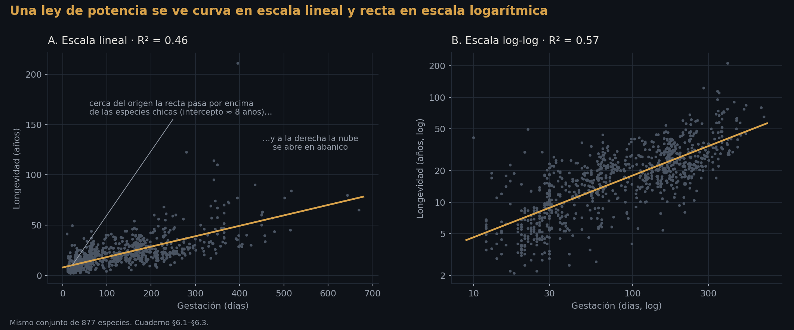
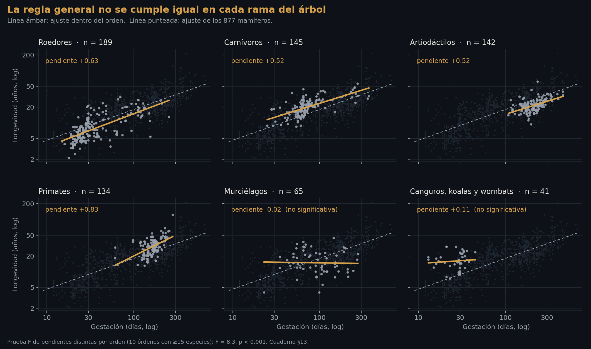
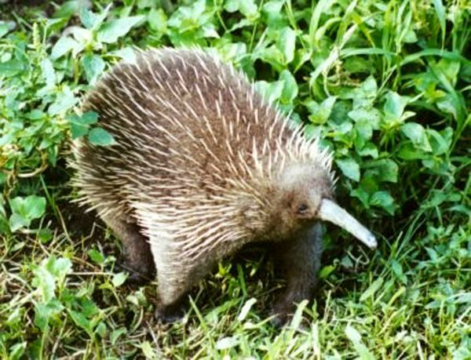
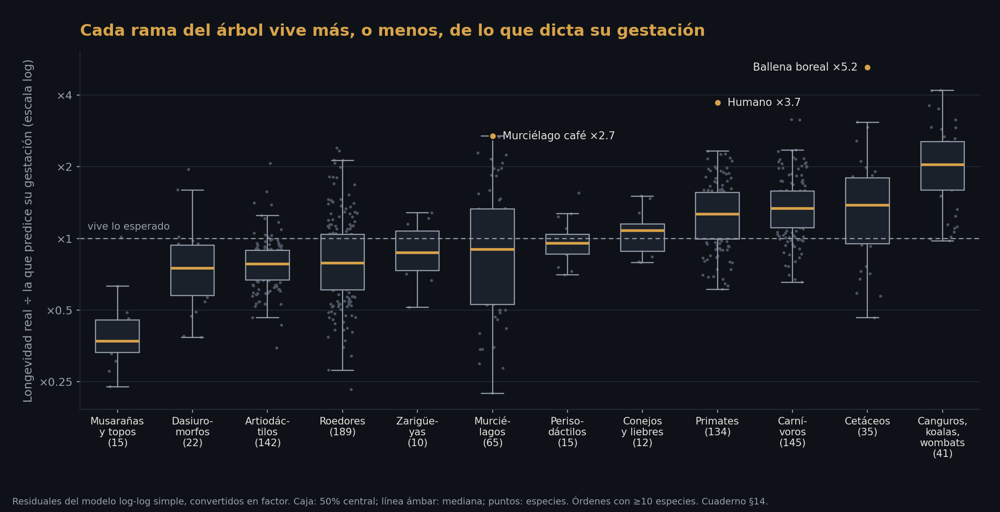
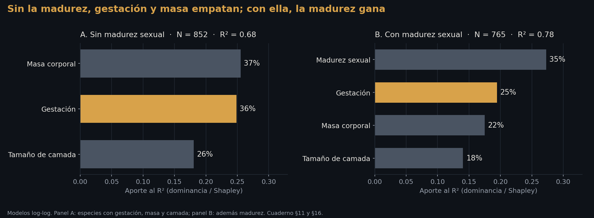
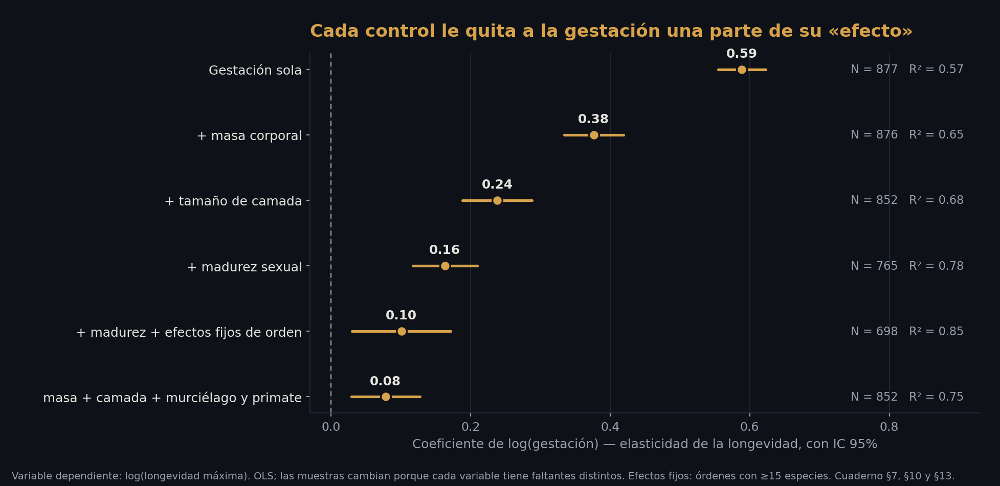

Ensayo · Biología y estadística
¿Vive más quien tarda más en nacer?
Gestación y longevidad en 877 mamíferos: un análisis estadístico
8,100 palabras~40 min de lectura7 figuras · 10 tablas · cuaderno
Resumen
Este ensayo pone a prueba una intuición vieja: que los mamíferos que tardan más en gestarse viven más. Lo hace con 877 especies de la base AnAge y un cuaderno de Python que cualquiera puede volver a correr.
La pregunta de investigación: ¿hay una correlación entre la duración de la gestación y la longevidad máxima de una especie? Y, si la hay, ¿significa que una gestación más larga lleva a una vida más larga?
La respuesta corta es que sí a lo primero y no a lo segundo. La correlación existe y es fuerte: r = 0.75 en escala logarítmica, y la gestación sola explica el 57% de las diferencias de longevidad entre especies. Cada vez que la gestación se duplica, la longevidad esperada se multiplica por 1.5. Pero esa cifra no sobrevive a las preguntas que hay que hacerle. Al tomar en cuenta el tamaño corporal, el «efecto» de la gestación cae de 0.59 a 0.38; al añadir el tamaño de camada, a 0.24; con la madurez sexual, a 0.16; y si además se compara solo dentro de cada orden de mamíferos, a 0.10. Si al modelo con masa y camada se le dice nada más si la especie es murciélago o primate, la gestación queda en 0.08. Sigue siendo distinta de cero, pero ya no es lo que parecía.
Los hallazgos centrales: (1) la relación es una ley de potencia en la que la vida crece menos que proporcionalmente con la gestación, así que las especies de gestación larga «caben» menos veces en su propia vida. (2) La «ley» no es universal: en primates la pendiente es 0.83 y en murciélagos es cero. (3) Los casos más extremos, como equidnas y wombats, que viven hasta ocho veces lo que su gestación predice, no son biología de la longevidad sino un artefacto: en marsupiales y monotremas la gestación mide otra cosa. (4) Entre las variables que explican la longevidad, la que más pesa es la madurez sexual (35% del poder explicativo). Sin ella, gestación y masa corporal quedan empatadas.
La conclusión: la gestación no es una causa de la longevidad sino uno de los síntomas de algo más hondo, el tempo de una especie. Gestación, madurez y vida son manecillas del mismo reloj, y el reloj lo marcan el tamaño, el linaje y la forma de vida.
Capítulo I. La pregunta
Hay una intuición que casi todo el mundo comparte sin haberla formulado: lo que tarda en hacerse, dura. El roble crece despacio y vive siglos; el hongo brota en una noche y se pudre en una semana. Un elefante pasa veintidós meses en el vientre de su madre y llega a los sesenta y cinco años; un ratón nace a los diecinueve días y no pasa de cuatro. Pareciera que la naturaleza le cobra a cada especie su vida en el mismo plazo en que se la entregó.
La intuición tiene algo de moral, y conviene desconfiar de ella por eso. Suena a que la paciencia se premia y la prisa se castiga, a que la vida es una inversión cuyo rendimiento depende del capital inicial. Tiene también algo de teleológico: como si la gestación larga existiera para una vida larga, como si el comienzo supiera del final.
La pregunta que este ensayo se hace es más modesta y más dura. No pregunta si la intuición es bonita sino si es cierta, y en qué sentido:
1. ¿Existe una correlación entre la gestación y la longevidad entre especies de mamíferos? 2. ¿Qué forma tiene? ¿Cada día de gestación «compra» la misma cantidad de vida, o la relación se curva? 3. ¿Sobrevive a los controles? ¿La gestación dice algo propio sobre la longevidad, o es la sombra de otra variable, sobre todo del tamaño corporal? 4. ¿Es universal? ¿La relación se cumple igual en todas las ramas del árbol de los mamíferos? 5. ¿Quiénes rompen la regla, y por qué?
Cada pregunta corresponde a un paso del análisis, y cada paso se hace en público: con el código, los resultados completos y la interpretación. La meta no es solo responder sino mostrar cómo una cifra va cambiando de significado a medida que se la interroga. Esa es, en el fondo, la lección de método del ensayo.
Capítulo II. Los datos
La fuente
Los datos vienen de AnAge, la base de datos de envejecimiento y longevidad animal del Human Ageing Genomic Resources (HAGR), mantenida por João Pedro de Magalhães y su grupo (de Magalhães & Costa, 2009; Tacutu et al., 2018). Es la referencia estándar en biología comparada del envejecimiento: 4,645 especies de vertebrados, cada una con su longevidad máxima registrada y, cuando existen, otros rasgos de su ciclo de vida: gestación, masa adulta, tamaño de camada, edad de madurez sexual, metabolismo.
La limpieza, paso por paso (cuaderno, §3)
1. Solo mamíferos. De las 4,645 especies, 1,349 son mamíferos. Se descartan aves, reptiles y peces porque en ellos el campo «Gestation/Incubation» mezcla gestación con incubación, y comparar las dos sería comparar cosas distintas. 2. Columnas de interés, renombradas al español: gestación (días), longevidad máxima (años), masa adulta (g), destete (días), tamaño de camada, madurez sexual de la hembra (días), partos por año, origen del ejemplar y tamaño de muestra. 3. Conversión a número. Los vacíos quedan marcados como faltantes. La gestación falta en el 18% de los mamíferos y la longevidad en el 24%. 4. Descarte de filas sin las dos variables clave. De 1,349 especies quedan 877. 5. Valores imposibles y duplicados. No hubo valores cero o negativos ni nombres científicos repetidos. El conjunto final es de 877 especies.
La Tabla 1 resume lo que queda.
| Variable | Especies con dato | Mediana | Rango |
|---|---|---|---|
| Gestación (días) | 877 | 85 | 10 – 670 |
| Longevidad máxima (años) | 877 | 17.9 | 2.1 – 211 |
| Masa adulta (g) | 876 | 2,965 | 2.1 – 136,000,000 |
| Tamaño de camada | 853 | 1.6 | 1 – 18 |
| Madurez sexual (días) | 785 | 450 | 24 – 8,212 |
| Destete (días) | 592 | 86.5 | 13 – 1,111 |
Tres advertencias antes de empezar
La longevidad es un récord, no un promedio. AnAge registra la edad máxima documentada de cada especie: los 122.5 años del humano son los de Jeanne Calment, no la esperanza de vida de nadie. Un récord depende de cuántos ejemplares se han observado, así que las especies bien estudiadas tienden a tener récords más altos.
Casi todo viene de cautiverio. De las 877 especies, 802 tienen su récord de ejemplares en cautiverio, 70 de silvestres y 5 de origen desconocido. Se vuelve sobre esto en el capítulo VII.
Las especies no son independientes. Un ratón y una rata no son dos experimentos separados de la naturaleza: comparten un ancestro reciente y heredaron de él buena parte de lo que son. Este es el problema más serio de comparar especies (Felsenstein, 1985), y tiene su propio capítulo, el VI.
Capítulo III. La primera mirada
La Figura 1 es la gráfica de partida del proyecto: cada punto es una especie. Es interactiva: al pasar el cursor sobre un punto, o tocarlo en el teléfono, aparece qué animal es, cuánto gesta, cuánto vive y cuánto debería vivir según su gestación. El botón de arriba cambia entre escala logarítmica y lineal.
Lo primero que salta a la vista es que la intuición no era falsa: la nube sube. Lo segundo es cuánto se dispersa alrededor de la tendencia. A gestación casi idéntica, unos sesenta días, conviven el murciélago café, que pesa diez gramos y vive treinta y cuatro años, la rata topo desnuda, que vive treinta y uno, y docenas de especies que no llegan a diez. La vaca y el humano gestan casi lo mismo, unos 280 días. Una vive veinte años y el otro, ciento veintidós.
Una sola cifra resume la relación: la correlación entre gestación y longevidad es 0.68. La correlación de rangos, que solo pregunta si al ordenar las especies por gestación quedan también ordenadas por longevidad, sin exigir que la relación sea una recta, es 0.75. Que la segunda sea mayor es la primera pista de que la relación no es una recta. Ya hay correlación. La pregunta siguiente es cuál es su forma.
Capítulo IV. La regresión, paso por paso
Paso 1: el modelo lineal (cuaderno, §6.1)
El punto de partida es la regresión más simple posible, una recta:
β₀ es dónde empieza la recta (la longevidad que tendría una especie con cero días de gestación) y β₁ es su pendiente (cuántos años de vida se suman por cada día de gestación). El cálculo se hace con la librería `statsmodels` de Python, que además de la línea da todo lo necesario para saber qué tan confiable es.
| Término | Coeficiente | Error estándar | t | p | IC 95% |
|---|---|---|---|---|---|
| Intercepto (β₀) | 7.93 años | 0.616 | 12.9 | < 0.001 | [6.72, 9.14] |
| Gestación (β₁, por día) | 0.104 años | 0.004 | 27.5 | < 0.001 | [0.096, 0.111] |
Qué quiere decir: cada día adicional de gestación se asocia con 0.104 años más de longevidad máxima, unos 38 días. Diez días más de gestación, un año más de vida. La gestación explica el 46% de las diferencias de longevidad.
Por qué no hay que quedarse aquí. El modelo trae señales de que está mal planteado. Los errores, es decir, las distancias entre cada especie y la recta, no se reparten de forma pareja: casi todas las especies quedan cerca y unas pocas quedan lejísimos, por arriba. Y la dispersión crece a medida que avanza la gestación (una prueba estadística, la de Breusch-Pagan, lo confirma). La gráfica lo hace evidente (Figura 2, panel A): la recta pasa por encima de las especies chicas, con un punto de partida de ocho años que ningún ratón alcanza, y a la derecha la nube se abre en abanico. El modelo lineal no miente, pero contesta una pregunta que los datos no plantean.
Paso 2: los logaritmos (cuaderno, §6.3)
Cuando las variables abarcan varios órdenes de magnitud, como aquí, donde la gestación va de 10 a 670 días y la masa de 2 gramos a 136 toneladas, la naturaleza no suele sumar: multiplica. Pasar de 10 a 20 días de gestación no se parece a pasar de 300 a 310; se parece a pasar de 300 a 600. Es la tradición de la alometría, que desde Kleiber (1932) estudia cómo cambian los rasgos de los organismos con su tamaño (Calder, 1984). La relación que se busca es una ley de potencia:
Los logaritmos convierten multiplicaciones en sumas, y con ellos la curva se vuelve recta:
La ventaja es que el coeficiente b deja de ser «años por día» y se vuelve una elasticidad: cuánto cambia la longevidad, en porcentaje, cuando la gestación cambia 1%. Es la misma idea con la que un economista mide cuánto cae la demanda cuando sube un precio.

| Término | Coeficiente | Error estándar | IC 95% | IC 95% robusto |
|---|---|---|---|---|
| Intercepto (log₁₀ a) | 0.077 | 0.034 | [0.010, 0.144] | — |
| Exponente b | 0.589 | 0.017 | [0.555, 0.623] | [0.552, 0.626] |
Qué quiere decir. El ajuste mejora de un R² de 0.46 a uno de 0.57, sin añadir nada más que los logaritmos. El exponente b = 0.59 se lee así: si la gestación se duplica, la longevidad esperada se multiplica por 1.5. Una especie que gesta 200 días vive, en promedio, 50% más que una que gesta 100.
Cuánto se equivoca. El error típico del modelo equivale a un factor de ×1.63. Para dos de cada tres especies, la longevidad real cae entre 1.63 veces menos y 1.63 veces más de lo que predice su gestación. Es la franja de la Figura 1, y es ancha: la gestación orienta, pero no adivina.
Las señales de alarma, otra vez. En escala logarítmica los errores ya se reparten de forma casi pareja, que es lo que el modelo necesita. Queda algo de abanico, porque las especies de gestación corta se dispersan más, así que el cuaderno recalcula los errores con un método que no supone dispersión pareja (los llamados errores robustos). El error estándar apenas cambia, de 0.017 a 0.019. Ninguna conclusión depende de ese detalle.
Paso 3: ¿contra qué se compara? (cuaderno, §12)
Una regresión no termina en el coeficiente: termina en la pregunta que se le hace. La más básica es si la gestación tiene algo que ver con la longevidad, es decir, si b podría ser cero. Con t ≈ 34, la respuesta es que no: b no es cero. Pero eso ya se veía en la gráfica. La pregunta interesante es contra qué valor teórico conviene comparar el 0.59.
Aquí hay una corrección que hacerle a la primera versión del cuaderno, que lo comparaba contra 0.25. Ese número viene de una regla famosa de la biología: los tiempos de un organismo crecen con su masa elevada a la ¼ (West, Brown & Enquist, 1997). Pero es un exponente de la masa. Si la gestación y la longevidad crecieran ambas con la masa elevada a ¼, entonces entre ellas serían proporcionales: el doble de una, el doble de la otra. El exponente que las une sería 1. Ésa es la comparación con sentido: ¿corren los dos relojes al mismo paso?
No: b = 1 se descarta con t ≈ −24. La longevidad crece menos que proporcionalmente con la gestación.
Antes de dar el 0.59 por bueno hay que hacer una corrección más, porque hay dos razones para pensar que se queda corto.
La primera es estadística. La regresión común supone que la variable de la derecha (la gestación) se mide sin error y que todo el ruido está en la de la izquierda (la longevidad). Aquí no es así: la gestación de una especie también es un promedio imperfecto. Cuando las dos variables tienen ruido, la pendiente sale más plana de lo que es en realidad. Este efecto se llama atenuación. Hay un método que trata a las dos variables por igual, el eje mayor reducido (Warton et al., 2006), y da 0.78.
La segunda es biológica. La gestación crece con la masa elevada a 0.198 y la longevidad con la masa elevada a 0.163. Si las dos dependieran solo del tamaño, el exponente que las une sería 0.163/0.198 = 0.82.
Dos caminos distintos llegan casi al mismo número, alrededor de 0.8. Ésa es la mejor estimación de cómo se relacionan los dos relojes: cerca de ir al mismo paso, pero un poco por debajo. El 0.59 es la cifra correcta para predecir la longevidad a partir de la gestación, y una cifra demasiado baja para describir la relación entre las dos.
Una consecuencia curiosa: cuántas gestaciones caben en una vida (cuaderno, §14)
Si la vida crece menos que la gestación, las especies de gestación larga caben menos veces en su propia vida. Basta dividir una entre otra para comprobarlo: entre más larga la gestación, menos veces cabe en la vida (correlación de −0.62). La mediana de los mamíferos es de unas 71 gestaciones por vida. El humano, con 160, está muy por encima, y eso adelanta lo que viene en el capítulo VII.
Capítulo V. El enemigo oculto: el tamaño
La sospecha
Un elefante gesta mucho y vive mucho. También es enorme. Un ratón gesta poco y vive poco, y también es diminuto. ¿Y si la gestación no tuviera nada que ver, y las dos variables solo reflejaran el tamaño del animal? Es la sospecha clásica de la variable omitida: si el tamaño empuja a la vez la gestación y la longevidad, la correlación entre las dos puede ser, en parte o del todo, un espejismo. Como el helado y los ahogados: los dos suben en verano, y no porque el helado ahogue a nadie.
La sospecha es razonable. La masa sola explica el 53% de las diferencias de longevidad, casi tanto como la gestación, y el 47% de las diferencias de gestación.
Paso 4: la regresión múltiple (cuaderno, §7)
La regresión múltiple pone varias variables a competir a la vez. El coeficiente de cada una responde a una pregunta más fina: ¿cuánto cambia la longevidad si cambia la gestación y el tamaño se queda igual? Es la manera estadística de comparar a dos especies del mismo tamaño que solo difieren en su gestación.
Para comparar modelos de forma justa hay que usar las mismas especies en todos. Cada variable tiene huecos distintos, y un R² calculado con 877 especies no se puede comparar con otro calculado con 852. El cuaderno usa las 852 que tienen gestación, longevidad, masa y camada.
| Modelo (variable explicada: log longevidad) | Variables | R² | R² ajustada | AIC |
|---|---|---|---|---|
| Gestación | 1 | 0.568 | 0.568 | −214.8 |
| Masa | 1 | 0.533 | 0.532 | −147.6 |
| Camada | 1 | 0.432 | 0.431 | 19.2 |
| Gestación + masa | 2 | 0.652 | 0.651 | −395.1 |
| Gestación + masa + camada | 3 | 0.684 | 0.683 | −477.3 |
| … + origen del ejemplar | 5 | 0.690 | 0.688 | −488.9 |
Tres lecturas:
1. Sola, la gestación gana: explica más que la masa y más que la camada. 2. Los R² no se suman. 0.57 + 0.53 + 0.43 daría más de 1. Las tres variables se solapan, porque a las tres las empuja lo mismo. 3. Juntas sí ayudan: el modelo de tres variables llega a 0.68, y el AIC, que penaliza meter variables de más, lo prefiere con claridad. Añadir el origen del ejemplar apenas mueve la aguja.
| Término | Coeficiente | Error estándar | t | IC 95% |
|---|---|---|---|---|
| Intercepto | 0.524 | 0.047 | 11.1 | [0.431, 0.616] |
| log gestación | 0.239 | 0.025 | 9.4 | [0.189, 0.288] |
| log masa | 0.089 | 0.006 | 14.8 | [0.077, 0.101] |
| log camada | −0.277 | 0.029 | −9.4 | [−0.335, −0.219] |
Qué quiere decir. El coeficiente de la gestación cae de 0.59 a 0.24 cuando el tamaño y la camada se mantienen fijos. Más de la mitad de lo que parecía «efecto de la gestación» era en realidad tamaño corporal y estrategia reproductiva: tener muchas crías baratas o pocas crías caras. Pero la gestación no desaparece: con t = 9.4 sigue diciendo algo que la masa y la camada no dicen. Entre dos especies del mismo tamaño, la que gesta más sigue tendiendo a vivir más.
El signo de la camada es igual de elocuente. A igual gestación y tamaño, cada vez que se duplica el número de crías por parto, la longevidad esperada cae un 17%. Es el famoso «vivir rápido, morir joven» (Promislow & Harvey, 1990) en un solo número.
Paso 5: la prueba de hipótesis, con el modelo completo (cuaderno, §8)
La misma lógica de antes, ahora con el coeficiente de 0.239:
- t = 0.239 / 0.025 = 9.4. El efecto es nueve veces más grande que su margen de error.
- p ≈ 0. Si la gestación no tuviera relación propia con la longevidad, ver un resultado así sería prácticamente imposible. Conviene repetir lo que el p no es: no es la probabilidad de que la gestación no importe. Es qué tan raros serían estos datos si no importara.
- IC 95% = [0.189, 0.288]. El valor verdadero está, razonablemente, en ese rango. Un detalle revelador: este intervalo contiene 0.25, que en el modelo simple quedaba descartado. La misma variable lleva a conclusiones distintas según con qué se la compare, y por eso un coeficiente no se interpreta sin decir de qué modelo viene.
Paso 6: más variables, y la que faltaba (cuaderno, §7 y §10)
Dos variables más mejoran el ajuste:
- El destete. Con las 591 especies que lo tienen, sube el R² de 0.73 a 0.75. Una prueba F confirma que la mejora no es casualidad, pero cuesta el 30% de las especies.
- La madurez sexual de la hembra. Es la variable que más se parece a la longevidad (correlación de 0.82, más que la gestación) y la tienen 785 especies. Al añadirla, con las mismas 765 especies, el R² salta de 0.69 a 0.78, y el coeficiente de la gestación vuelve a encogerse, de 0.24 a 0.16.
La madurez se lleva parte de lo que explicaba la gestación porque las dos miden casi lo mismo: qué tan despacio se desarrolla un animal. Quien gesta largo, madura tarde. Se vuelve sobre esto en el capítulo VIII.
Capítulo VI. El árbol
El problema que la estadística estándar no ve
Todo lo anterior trata a las 877 especies como 877 casos independientes. No lo son. Los 189 roedores comparten un ancestro, igual que los 134 primates, y heredaron de él un estilo de vida: un ritmo, una manera de reproducirse, un tamaño. Cuando la regresión «descubre» que la gestación predice la longevidad, una parte de lo que descubre es simplemente que los primates se parecen a los primates y los roedores a los roedores. Es como encuestar a 877 personas que resultan ser doce familias: la muestra es más chica de lo que parece. Felsenstein (1985) planteó el problema para la biología, y su solución completa, la regresión filogenética, exige un árbol con las distancias evolutivas entre especies que este cuaderno no tiene. Pero hay dos aproximaciones que sí caben y que dicen mucho.
Paso 7: marsupiales y monotremas (cuaderno, §13)
Hay 84 especies que no son placentarias: 41 diprotodontos (canguros, koalas, wombats), 22 dasiuromorfos, 10 zarigüeyas, 8 bandicuts y 3 monotremas (los dos equidnas y el ornitorrinco). En ellas, la «gestación» no mide lo mismo. Un canguro rojo nace a los 33 días, del tamaño de un frijol, y termina de desarrollarse en la bolsa durante meses. Un equidna pone un huevo. Comparar sus 10 o 30 días con los 280 de un humano es comparar el principio de un proceso con el proceso entero.
En la Figura 1 aparecen como círculos huecos, y se ve el problema: forman un grupo a la izquierda, por encima de la línea. En promedio viven 1.36 veces lo que predice su gestación, y los diprotodontos, 1.95 veces. Si se les retira:
| Muestra | N | Exponente b | R² |
|---|---|---|---|
| Todos los mamíferos | 877 | 0.589 | 0.567 |
| Solo placentarios | 793 | 0.651 | 0.613 |
El ajuste mejora. Los casos extremos de esas especies no eran biología de la longevidad: eran una variable que, en ellas, mide otra cosa.
Paso 8: comparar dentro de cada rama (cuaderno, §13)
La segunda aproximación consiste en comparar a cada especie solo con las de su propio orden: roedores con roedores, primates con primates. Técnicamente se llama efectos fijos: el modelo le da a cada orden su propio punto de partida, de modo que las diferencias permanentes entre órdenes no cuenten, y la pendiente se calcula solo con lo que varía dentro de cada uno. Es la misma técnica con la que un economista compara a cada estado consigo mismo para que las diferencias de siempre entre estados no contaminen el efecto que busca. Los errores se calculan aceptando que las especies del mismo orden se parecen entre sí.
Con los diez órdenes que tienen al menos 15 especies (803 en total):
- Sin separar por orden, la pendiente es 0.60.
- Dentro de cada orden, 0.51. La relación aguanta bastante bien.
- Dentro de cada orden y con el tamaño fijo, 0.20, con un margen de error amplio (p = 0.04). Apenas pasa la prueba.
- El modelo más exigente, dentro de cada orden y con masa, camada y madurez, deja a la gestación en 0.10 (IC 95%: 0.03 a 0.17; p = 0.005), con un R² de 0.85.
Paso 9: ¿la misma ley para todos? (cuaderno, §13)
Si la relación fuera una ley general de los mamíferos, la pendiente debería parecerse en cada orden. No se parece.

| Orden | Especies | Pendiente | Error estándar | p | R² |
|---|---|---|---|---|---|
| Roedores | 189 | 0.63 | 0.05 | < 0.001 | 0.47 |
| Carnívoros | 145 | 0.52 | 0.05 | < 0.001 | 0.47 |
| Artiodáctilos | 142 | 0.52 | 0.07 | < 0.001 | 0.26 |
| Primates | 134 | 0.83 | 0.11 | < 0.001 | 0.30 |
| Murciélagos | 65 | −0.02 | 0.12 | 0.84 | 0.00 |
| Diprotodontos | 41 | 0.11 | 0.20 | 0.57 | 0.01 |
| Cetáceos | 35 | 1.64 | 0.59 | 0.009 | 0.19 |
| Dasiuromorfos | 22 | 0.07 | 0.19 | 0.73 | 0.01 |
| Musarañas y topos | 15 | 0.88 | 0.32 | 0.015 | 0.37 |
| Perisodáctilos | 15 | 0.43 | 0.31 | 0.19 | 0.13 |
Para saber si las diferencias entre órdenes son reales o casualidad, se compara un modelo que obliga a todos los órdenes a tener la misma pendiente con otro que le deja a cada uno la suya. La prueba F da F = 8.3, p < 0.001: las pendientes son distintas de verdad.
Los dos extremos son los más interesantes:
- En los primates la gestación pesa más que en ningún otro orden grande (0.83, cerca de ir al mismo paso). Entre monos, una gestación más larga sí acompaña casi uno a uno a una vida más larga.
- En los murciélagos no pesa nada. La pendiente es literalmente cero. Un murciélago que gesta 50 días y uno que gesta 250 tienen, en promedio, la misma longevidad. Algo distinto de la gestación decide cuánto vive un murciélago.
La conclusión de este capítulo es incómoda para la intuición del principio: la «ley» es, en buena parte, una diferencia entre ramas del árbol, no una regla dentro de ellas. Los órdenes de gestación larga son también órdenes longevos. Dentro de cada uno, la relación es fuerte en algunos, débil en otros y no existe en algunos más.
Capítulo VII. Los que rompen la regla
Paso 10: leer los residuales (cuaderno, §9 y §14)
Un residual es lo que el modelo no explica: la distancia entre lo que vive una especie y lo que su gestación predice. Aquí se expresa como factor: ×2 quiere decir que vive el doble de lo esperado; ×0.5, la mitad. Los residuales no son basura estadística: son la lista de preguntas que el modelo deja abiertas.
| Especie | Gestación (días) | Longevidad (años) | Esperada (años) | Factor |
|---|---|---|---|---|
| Equidna de pico largo | 10 | 41.2 | 4.6 | ×8.9 |
| Equidna de hocico corto | 22 | 49.5 | 7.4 | ×6.7 |
| Ballena boreal | 396 | 211 | 40.4 | ×5.2 |
| Wombat de nariz peluda | 21 | 30.0 | 7.2 | ×4.2 |
| Humano | 280 | 122.5 | 33.0 | ×3.7 |
| Murciélago café | 55 | 34 | 12.6 | ×2.7 |
| Chimpancé | 229 | 68 | 29.3 | ×2.3 |
| Rata topo desnuda | 70 | 31 | 14.6 | ×2.1 |
| Vaca doméstica | 277 | 20 | 32.8 | ×0.6 |
| Rata noruega | 21 | 3.8 | 7.2 | ×0.5 |
| Musaraña almizclera roja | 25 | 2.2 | 7.9 | ×0.3 |
| Tenrec rayado | 59 | 2.7 | 13.2 | ×0.2 |
La lista separa tres tipos de excepción.
Las excepciones de medición. Los cuatro primeros lugares de «viven de más» los ocupan monotremas y marsupiales: equidnas, wombats y el ornitorrinco. No son longevos a pesar de su gestación corta. Su gestación es corta porque mide otra cosa (capítulo VI).
El campeón de la tabla merece que se le vea la cara. El equidna de pico largo de Nueva Guinea es el residual más extremo de los 877 mamíferos: según su «gestación» debería vivir menos de cinco años, y el récord registrado es de 41.

Las excepciones biológicas. Aquí están los casos que la biología del envejecimiento estudia por su cuenta. La ballena boreal, el mamífero más longevo conocido, con edades de más de dos siglos calculadas a partir de cambios químicos en el cristalino del ojo (George et al., 1999). La rata topo desnuda, un roedor de 35 gramos que vive más de treinta años y casi no muestra el aumento del riesgo de morir con la edad que define al envejecimiento (Buffenstein, 2005). Y los murciélagos, que viven en promedio mucho más que cualquier mamífero terrestre de su tamaño (Austad & Fischer, 1991). La explicación más aceptada es que volar los protege de los depredadores, y una especie que corre poco peligro puede «costear» un cuerpo que dure (Healy et al., 2014).
Las excepciones del dato. La vaca vive ×0.6 de lo esperado. Probablemente no es que las vacas envejezcan rápido, sino que casi ninguna llega a vieja: el ganado se sacrifica mucho antes de su límite biológico, y el récord lo refleja.
Paso 11: el patrón por familias (cuaderno, §14)
Si los residuales fueran puro ruido, cada orden tendría tantas especies por arriba como por abajo de lo esperado. La Figura 5 muestra que no es así.

Musarañas y topos viven sistemáticamente menos de lo esperado (la mediana ronda ×0.4); artiodáctilos y roedores, algo menos. Primates, carnívoros y cetáceos viven más. Y los canguros, koalas y wombats, que van hasta arriba, son el artefacto del capítulo VI. Los murciélagos tienen la caja más larga de todas: hay de todo, porque el modelo simple solo ve su gestación y no sabe lo diminutos que son.
Al tomar en cuenta el tamaño y la camada, la historia de los murciélagos se invierte. Si al modelo de la Tabla 5 se le añaden solo dos datos de sí o no, «es murciélago» y «es primate»:
- El R² sube de 0.68 a 0.75.
- A igual gestación, tamaño y camada, ser murciélago multiplica la longevidad esperada por ×2.0, y ser primate, por ×1.9.
- El coeficiente de la gestación cae de 0.24 a 0.08 (IC 95%: 0.03 a 0.13).
Este es quizás el resultado más revelador del ensayo. Dos datos de sí o no sobre el linaje explican más que la gestación misma, y se llevan casi todo lo que ella parecía explicar. Saber si un animal vuela o si es un mono dice más sobre cuánto vivirá que saber cuántos días pasó en el vientre.
El humano
El humano vive ×3.7 lo que predice su gestación, más que cualquier otro placentario salvo la ballena boreal. Parte de la anomalía es real: los primates ya son longevos para su tamaño, y nosotros somos el primate más longevo. Parte es el dato: los 122.5 años son un único récord, el de la persona mejor documentada de la especie más documentada del planeta. Ninguna otra especie de la base fue observada con tanta atención ni durante tanto tiempo, y un récord crece con el número de observaciones.
La función de predicción del cuaderno, construida con el modelo de tres variables, le asigna al humano 34 años: el límite de un chimpancé un poco más grande. La diferencia entre 34 y 122 no está en la gestación.
| Especie | Esperada (gest. + masa + camada) | Real | Factor |
|---|---|---|---|
| Caballo | 41.2 | 57 | ×1.4 |
| Perro | 14.1 | 27 | ×1.9 |
| Murciélago café | 10.7 | 34 | ×3.2 |
| Humano | 34.3 | 122.5 | ×3.6 |
| Rata topo desnuda | 7.4 | 31 | ×4.2 |
El cautiverio: una advertencia sobre el dato (cuaderno, §15)
Una sospecha natural es que los animales de zoológico viven más que los silvestres, y que eso infla los récords. El problema es que con estos datos no se puede medir bien: el 91% de los récords viene de cautiverio, y entre las 70 especies silvestres están las grandes ballenas, cuya edad se calcula en el campo. Por eso, a igual gestación, el cautiverio sale asociado a vidas un poco más cortas. No es que el zoológico acorte la vida. Es que las especies que caen en cada grupo son muy distintas.
Lo que sí se puede decir es que la pendiente se mantiene: 0.65 en silvestres y 0.58 en cautivas, y entre 0.43 y 0.60 según cuántos ejemplares respaldan cada récord. Que la relación existe no depende de la fuente del dato; su tamaño exacto, un poco sí.
Capítulo VIII. Cuánto pesa cada cosa
Por qué la correlación no basta (cuaderno, §11)
Con cuatro variables que se solapan, la pregunta «¿cuál importa más?» no tiene una respuesta obvia. La correlación de cada una con la longevidad reparte mal el crédito, porque le atribuye a cada variable también lo que comparte con las demás. Es como premiar a cada jugador por todos los goles del equipo en los que tocó el balón: la suma de los premios da más goles de los que hubo.
El análisis de dominancia resuelve el problema con una idea de la teoría de juegos, el valor de Shapley (Lindeman, Merenda & Gold, 1980; Grömping, 2006). Prueba todas las combinaciones posibles de variables, mide cuánto R² añade cada una al entrar en cada combinación y promedia. Así, lo que dos variables comparten se reparte entre ellas en vez de contarse dos veces, y los aportes suman exactamente el R² total.
| Variable | Correlación simple | Coeficiente estandarizado | Aporte al R² | % del R² |
|---|---|---|---|---|
| Madurez sexual | 0.820 | 0.450 | 0.273 | 34.8% |
| Gestación | 0.772 | 0.210 | 0.194 | 24.8% |
| Masa corporal | 0.734 | 0.188 | 0.175 | 22.4% |
| Tamaño de camada | −0.671 | −0.169 | 0.141 | 18.0% |
Los tres métodos coinciden en el orden, pero solo la dominancia reparte sin contar dos veces. Con las cuatro variables, la gestación es la segunda, no la primera: la madurez sexual le gana con claridad.
¿Y sin la madurez? (cuaderno, §16)
La madurez gana, pero hay una sospecha legítima: ¿no se parece demasiado a la longevidad? Al fin y al cabo es un tiempo dentro de la vida, y nadie vive menos de lo que tarda en madurar. Si la madurez ocupara casi toda la vida, la correlación de 0.82 sería en parte pura aritmética. Conviene mirar las dos cosas: qué pasa si se quita y si de verdad es circular.

Sin la madurez, gestación y masa quedan empatadas. Con las 852 especies de la muestra amplia, la masa aporta el 37% del R² y la gestación el 36%. Con las 765 especies que tienen madurez, el orden se invierte (38% contra 36%), y entre los placentarios la gestación saca un poco más de ventaja (40% contra 36%). La camada queda tercera en todos los casos, con una cuarta parte. Ninguna de las dos domina: el tamaño del animal y la lentitud de su desarrollo se reparten el crédito casi por mitades.
La madurez no es circular, pero tampoco es una explicación. Dos pruebas. La primera: en la mediana de las especies, la madurez ocupa solo el 7% de la vida máxima (entre 2% y 18% para nueve de cada diez especies). Es una rebanada demasiado delgada para fabricar por sí sola una correlación de 0.82. La segunda: si en vez de la vida total se explica solo la vida adulta, lo que queda después de madurar, la madurez sigue pesando y el R² apenas baja, de 0.78 a 0.74. Las variables tampoco se estorban: sus VIF quedan entre 2 y 3.
La razón por la que la madurez predice tan bien es otra: es la manecilla del reloj más cercana a la que se quiere leer. Gestar es el primer tramo del desarrollo y madurar es el último; la longevidad es lo que viene después. Por eso conviene no confundir predecir con explicar. Decir que una especie «vive mucho porque madura tarde» es casi decir que vive despacio porque vive despacio. La madurez sirve para predecir mejor; para entender, apunta a la misma causa común que la gestación.
La síntesis
La Figura 7 reúne el recorrido entero en una sola imagen: el coeficiente de la gestación, con su margen de error, en cada uno de los modelos del ensayo.

De 0.59 a 0.08. La relación que el capítulo III veía a simple vista no era falsa. Lo que pasa es que la mayor parte de lo que mide no es la gestación.
Capítulo IX. Conclusiones
Las respuestas
1. ¿Existe una correlación? Sí, y es fuerte. r = 0.75 en escala logarítmica; la gestación sola explica el 57% de las diferencias de longevidad máxima entre 877 especies de mamíferos, y el 61% entre los placentarios.
2. ¿Qué forma tiene? Una ley de potencia en la que la vida crece menos que la gestación. Duplicar la gestación multiplica la longevidad esperada por 1.5. Corregido el sesgo de atenuación, la relación entre los dos relojes ronda un exponente de 0.8: cerca de ir al mismo paso, pero por debajo.
3. ¿Sobrevive a los controles? Sí, pero encogida. Con masa y camada, el coeficiente pasa de 0.59 a 0.24; con madurez sexual, a 0.16; dentro de cada orden, a 0.10. Nunca llega a cero, pero termina siendo una fracción de lo que parecía.
4. ¿Es universal? No. Las pendientes difieren entre órdenes: casi uno a uno en primates, nula en murciélagos. La regularidad es en buena parte una diferencia entre ramas del árbol.
5. ¿Quiénes rompen la regla? Tres tipos de excepción: las de medición (marsupiales y monotremas, cuya gestación mide otra cosa), las biológicas (ballena boreal, rata topo desnuda, murciélagos, primates) y las del dato (el ganado, el récord humano).
Y a la pregunta del principio, si una gestación más larga lleva a una vida más larga, la respuesta es no. No en el sentido causal que la intuición sugería. Son datos observados entre especies, no un experimento, y lo que muestran es asociación. La forma en que esa asociación se disuelve al controlar otras variables es la huella de una causa común.
La causa común: el tempo
Gestación, madurez sexual, destete, tamaño de camada y longevidad no son cinco rasgos independientes. Son cinco lecturas de un mismo eje, el que la biología llama el continuo lento–rápido (Stearns, 1992; Promislow & Harvey, 1990). Una especie no «elige» una gestación larga y por eso vive mucho. Su linaje la colocó en un lugar del eje, en función de su tamaño, de cuánto la amenaza el mundo y de cómo se gana la vida, y desde ese lugar todos sus relojes van despacio o van rápido a la vez.
Por eso la madurez sexual le gana a la gestación: es una lectura más limpia del mismo eje. Por eso, sin ella, gestación y tamaño empatan: son dos caras de la misma lentitud. Por eso dos datos sobre el linaje se llevan casi todo el efecto: el linaje es donde vive el eje. Y por eso los murciélagos rompen la regla: volar los sacó del eje terrestre. Con pocos depredadores, la selección favoreció cuerpos que duran, sin importar cuánto tardaran en hacerse.
La intuición del roble y el hongo tenía razón en el patrón y se equivocaba en el mecanismo. Lo que tarda en hacerse no dura porque tardó. Tarda y dura por la misma razón.
Lo que el método enseña
Este ensayo cuenta, en el fondo, la historia de un número que se fue encogiendo. Cada paso fue honesto y cada cifra fue correcta para la pregunta que contestaba: 0.104 años por día, 0.59 de elasticidad, 0.24 con masa y camada, 0.08 sabiendo si la especie vuela o es un mono. El error no habría estado en ninguna de esas cifras sino en detenerse en la primera y contarla como si fuera la última.
Hay aquí una lección que va más allá de la biología. La correlación es una pregunta mal planteada con buena cara. Responde con firmeza a «¿se mueven juntas estas dos cosas?», y deja que el lector crea que respondió a «¿una produce a la otra?». La regresión múltiple, la comparación dentro de cada rama y la lectura de los residuales no son técnicas para encontrar la verdad. Son técnicas para perder ilusiones de manera ordenada.
Lo que queda abierto
- La regresión filogenética. Es el siguiente paso natural: incorporar el árbol de los mamíferos y medir la relación descontando el parentesco. Comparar dentro de cada orden es una aproximación gruesa a eso.
- Crías precoces y crías indefensas. Un potro camina a las pocas horas de nacer; un ratón nace ciego y sin pelo. La gestación mide cosas distintas en unos y otros, y AnAge no trae esa variable.
- La tasa metabólica. Para 327 especies AnAge trae el metabolismo basal. A igual tamaño, más metabolismo se asocia con menos longevidad, la vieja hipótesis de la «tasa de vida» (Pearl, 1928; Speakman, 2005), pero la gestación sigue pesando al añadirlo. Merece su propio análisis.
- Aves. En las aves la incubación es el equivalente de la gestación, y son famosas por vivir mucho para su tamaño. La misma pregunta, con el mismo cuaderno, en otra clase de vertebrados.
Nota de método
Software. Python 3 con `pandas`, `numpy`, `statsmodels` (regresiones, pruebas t y F, errores robustos y agrupados, VIF), `scipy` y `seaborn`/`matplotlib`. Las figuras se generan a partir del archivo crudo con la misma limpieza que el cuaderno, y la Figura 1 con Chart.js.
Decisiones del análisis, anotadas para quien quiera discutirlas:
- Todas las variables numéricas se usan en logaritmo base 10. Las elasticidades se leen igual en cualquier base.
- Las comparaciones entre modelos se hacen siempre con las mismas especies.
- La comparación dentro de cada orden usa los órdenes con al menos 15 especies, y sus márgenes de error aceptan que las especies del mismo orden se parecen entre sí.
- No se eliminaron valores extremos. Los marsupiales y monotremas se analizan aparte, pero se mantienen en los modelos principales para no cambiar la muestra a mitad del ensayo; la Tabla 6 muestra qué pasa sin ellos.
Limitaciones. Datos observados entre especies: asociación, no causa. Sin corrección filogenética completa. La longevidad es un récord sensible a cuánto se ha estudiado cada especie. La gestación de AnAge no distingue crías precoces de crías indefensas.
Referencias
- Austad, S. N., & Fischer, K. E. (1991). Mammalian aging, metabolism, and ecology: evidence from the bats and marsupials. Journal of Gerontology, 46(2), B47–B53.
- Buffenstein, R. (2005). The naked mole-rat: a new long-living model for human aging research. Journal of Gerontology: Biological Sciences, 60(11), 1369–1377.
- Calder, W. A. (1984). Size, Function, and Life History. Harvard University Press.
- de Magalhães, J. P., & Costa, J. (2009). A database of vertebrate longevity records and their relation to other life-history traits. Journal of Evolutionary Biology, 22(8), 1770–1774.
- Felsenstein, J. (1985). Phylogenies and the comparative method. The American Naturalist, 125(1), 1–15.
- George, J. C., Bada, J., Zeh, J., et al. (1999). Age and growth estimates of bowhead whales (Balaena mysticetus) via aspartic acid racemization. Canadian Journal of Zoology, 77(4), 571–580.
- Grömping, U. (2006). Relative importance for linear regression in R: the package relaimpo. Journal of Statistical Software, 17(1), 1–27.
- Healy, K., Guillerme, T., Finlay, S., et al. (2014). Ecology and mode-of-life explain lifespan variation in birds and mammals. Proceedings of the Royal Society B, 281, 20140298.
- Kleiber, M. (1932). Body size and metabolism. Hilgardia, 6(11), 315–353.
- Lindeman, R. H., Merenda, P. F., & Gold, R. Z. (1980). Introduction to Bivariate and Multivariate Analysis. Scott, Foresman.
- Pearl, R. (1928). The Rate of Living. Knopf.
- Promislow, D. E. L., & Harvey, P. H. (1990). Living fast and dying young: a comparative analysis of life-history variation among mammals. Journal of Zoology, 220(3), 417–437.
- Speakman, J. R. (2005). Body size, energy metabolism and lifespan. Journal of Experimental Biology, 208(9), 1717–1730.
- Stearns, S. C. (1992). The Evolution of Life Histories. Oxford University Press.
- Tacutu, R., Thornton, D., Johnson, E., et al. (2018). Human Ageing Genomic Resources: new and updated databases. Nucleic Acids Research, 46(D1), D1083–D1090.
- Warton, D. I., Wright, I. J., Falster, D. S., & Westoby, M. (2006). Bivariate line-fitting methods for allometry. Biological Reviews, 81(2), 259–291.
- West, G. B., Brown, J. H., & Enquist, B. J. (1997). A general model for the origin of allometric scaling laws in biology. Science, 276(5309), 122–126.